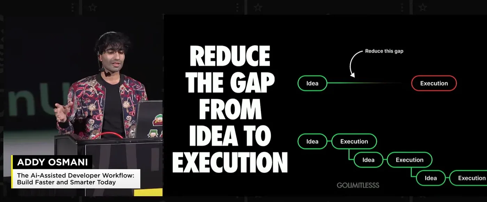
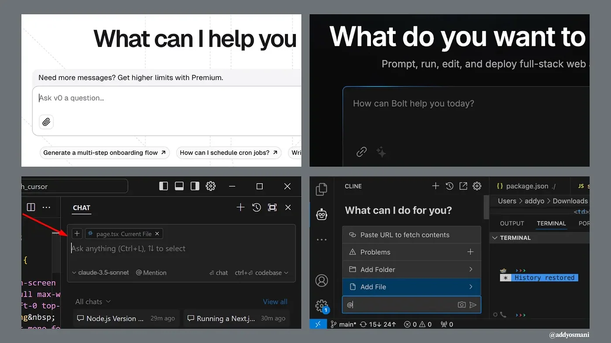
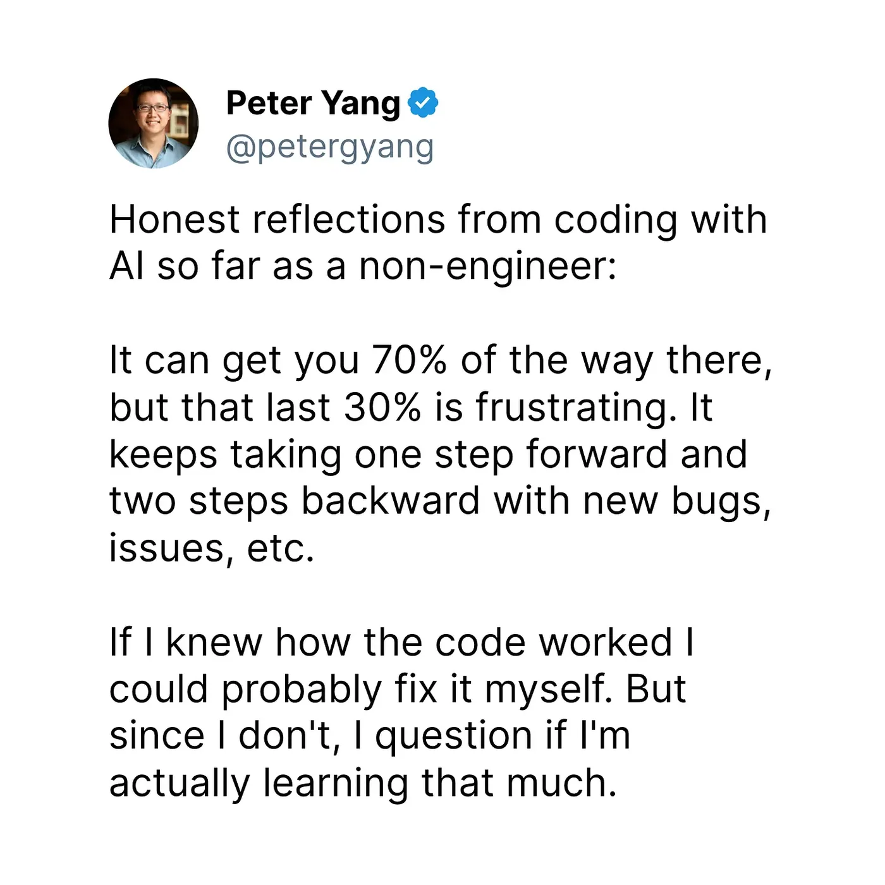
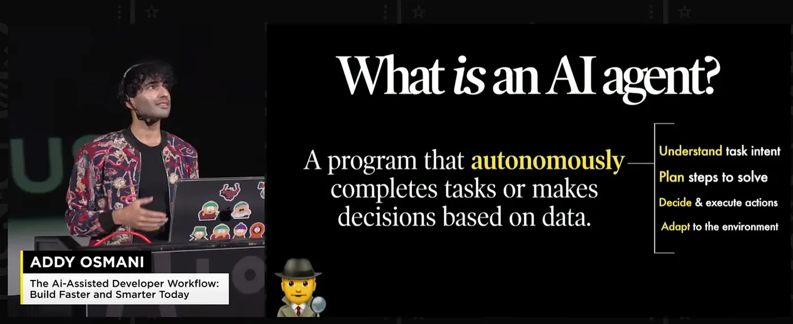
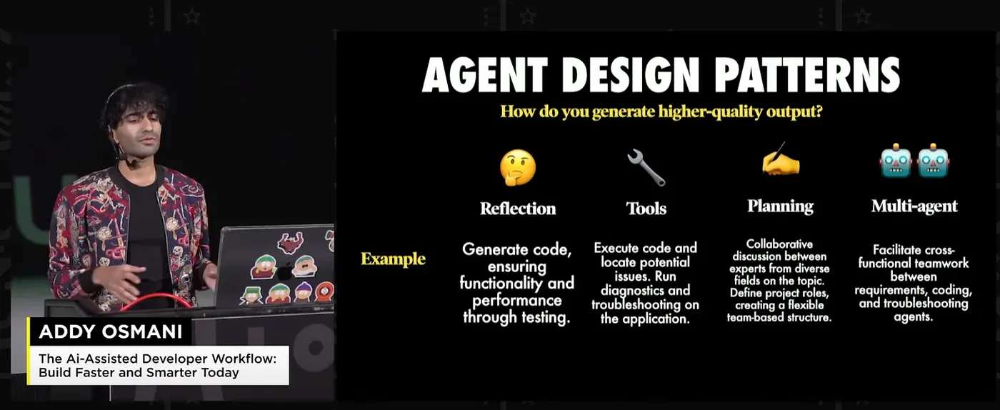
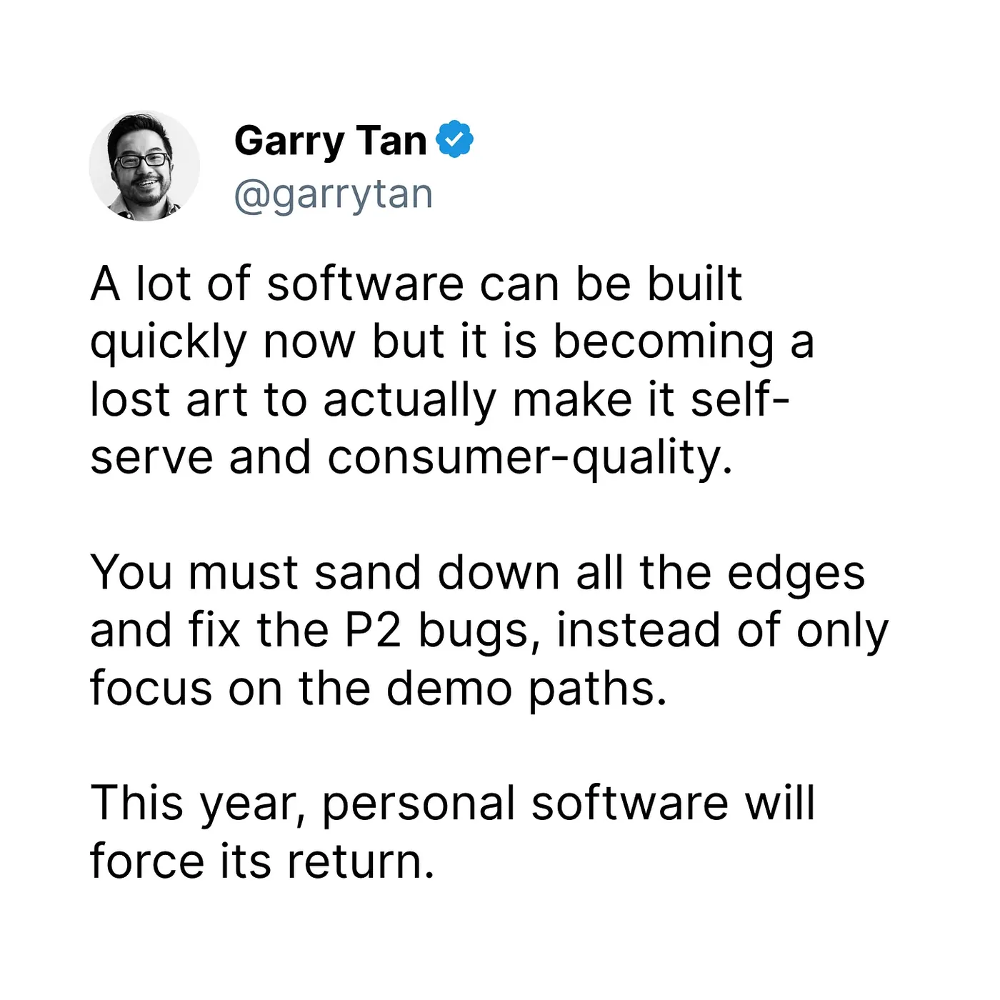
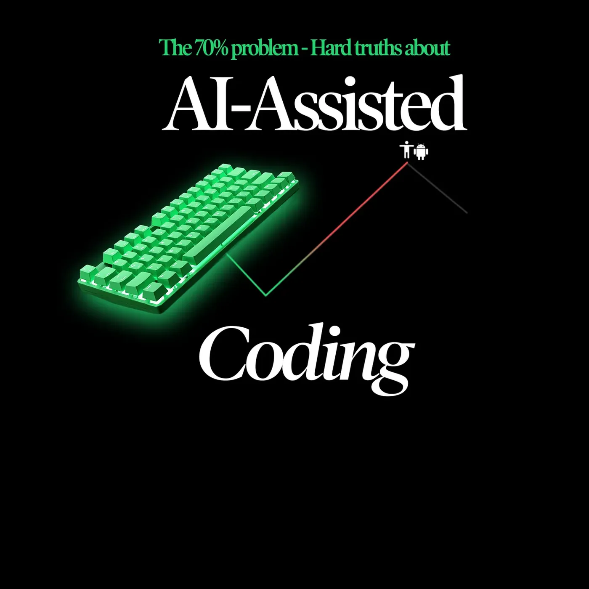

The 70% problem: Hard truths about AI-assisted coding
After spending the last few years embedded in AI-assisted development, I've noticed a fascinating pattern. While engineers report being dramatically more productive with AI, the actual software we use daily doesn’t seem like it’s getting noticeably better. What's going on here?
I think I know why, and the answer reveals some fundamental truths about software development that we need to reckon with. Let me share what I've learned.

How developers are actually using AI
I've observed two distinct patterns in how teams are leveraging AI for development. Let's call them the "bootstrappers" and the "iterators." Both are helping engineers (and even non-technical users) reduce the gap from idea to execution (or MVP).

The Bootstrappers: Zero to MVP
Tools like Bolt, v0, and screenshot-to-code AI are revolutionizing how we bootstrap new projects. These teams typically:
- Start with a design or rough concept
- Use AI to generate a complete initial codebase
- Get a working prototype in hours or days instead of weeks
- Focus on rapid validation and iteration
The results can be impressive. I recently watched a solo developer use Bolt to turn a Figma design into a working web app in next to no time. It wasn't production-ready, but it was good enough to get very initial user feedback.
The Iterators: daily development
The second camp uses tools like Cursor, Cline, Copilot, and WindSurf for their daily development workflow. This is less flashy but potentially more transformative. These developers are:
- Using AI for code completion and suggestions
- Leveraging AI for complex refactoring tasks
- Generating tests and documentation
- Using AI as a "pair programmer" for problem-solving
But here's the catch: while both approaches can dramatically accelerate development, they come with hidden costs that aren't immediately obvious.
The hidden cost of "AI Speed"
When you watch a senior engineer work with AI tools like Cursor or Copilot, it looks like magic. They can scaffold entire features in minutes, complete with tests and documentation. But watch carefully, and you'll notice something crucial: They're not just accepting what the AI suggests. They're constantly:
- Refactoring the generated code into smaller, focused modules
- Adding edge case handling the AI missed
- Strengthening type definitions and interfaces
- Questioning architectural decisions
- Adding comprehensive error handling
In other words, they're applying years of hard-won engineering wisdom to shape and constrain the AI's output. The AI is accelerating their implementation, but their expertise is what keeps the code maintainable.
Junior engineers often miss these crucial steps. They accept the AI's output more readily, leading to what I call "house of cards code" – it looks complete but collapses under real-world pressure.
The knowledge paradox
Here's the most counterintuitive thing I've discovered: AI tools help experienced developers more than beginners. This seems backward – shouldn't AI democratize coding?
The reality is that AI is like having a very eager junior developer on your team. They can write code quickly, but they need constant supervision and correction. The more you know, the better you can guide them.
This creates what I call the "knowledge paradox":
- Seniors use AI to accelerate what they already know how to do
- Juniors try to use AI to learn what to do
- The results differ dramatically
I've watched senior engineers use AI to:
- Rapidly prototype ideas they already understand
- Generate basic implementations they can then refine
- Explore alternative approaches to known problems
- Automate routine coding tasks
Meanwhile, juniors often:
- Accept incorrect or outdated solutions
- Miss critical security and performance considerations
- Struggle to debug AI-generated code
- Build fragile systems they don't fully understand
The 70% problem: AI's learning curve paradox
A tweet that recently caught my eye perfectly captures what I've been observing in the field: Non-engineers using AI for coding find themselves hitting a frustrating wall. They can get 70% of the way there surprisingly quickly, but that final 30% becomes an exercise in diminishing returns.

This "70% problem" reveals something crucial about the current state of AI-assisted development. The initial progress feels magical - you can describe what you want, and AI tools like v0 or Bolt will generate a working prototype that looks impressive. But then reality sets in.
The two steps back pattern
What typically happens next follows a predictable pattern:
- You try to fix a small bug
- The AI suggests a change that seems reasonable
- This fix breaks something else
- You ask AI to fix the new issue
- This creates two more problems
- Rinse and repeat
This cycle is particularly painful for non-engineers because they lack the mental models to understand what's actually going wrong. When an experienced developer encounters a bug, they can reason about potential causes and solutions based on years of pattern recognition. Without this background, you're essentially playing whack-a-mole with code you don't fully understand.
The learning paradox continued
There's a deeper issue here: The very thing that makes AI coding tools accessible to non-engineers - their ability to handle complexity on your behalf - can actually impede learning. When code just "appears" without you understanding the underlying principles:
- You don't develop debugging skills
- You miss learning fundamental patterns
- You can't reason about architectural decisions
- You struggle to maintain and evolve the code
This creates a dependency where you need to keep going back to AI to fix issues, rather than developing the expertise to handle them yourself.
The knowledge gap
The most successful non-engineers I've seen using AI coding tools take a hybrid approach:
- Use AI for rapid prototyping
- Take time to understand how the generated code works
- Learn basic programming concepts alongside AI usage
- Build up a foundation of knowledge gradually
- Use AI as a learning tool, not just a code generator
But this requires patience and dedication - exactly the opposite of what many people hope to achieve by using AI tools in the first place.
Implications for the future
This "70% problem" suggests that current AI coding tools are best viewed as:
- Prototyping accelerators for experienced developers
- Learning aids for those committed to understanding development
- MVP generators for validating ideas quickly
But they're not yet the coding democratization solution many hoped for. The final 30% - the part that makes software production-ready, maintainable, and robust - still requires real engineering knowledge.
The good news? This gap will likely narrow as tools improve. But for now, the most pragmatic approach is to use AI to accelerate learning, not replace it entirely.
What actually works: practical patterns
After observing dozens of teams, here's what I've seen work consistently:
1. The "AI first draft" pattern
- Let AI generate a basic implementation
- Manually review and refactor for modularity
- Add comprehensive error handling
- Write thorough tests
- Document key decisions
2. The "Constant conversation" pattern
- Start new AI chats for each distinct task
- Keep context focused and minimal
- Review and commit changes frequently
- Maintain tight feedback loops
3. The "Trust but verify" pattern
- Use AI for initial code generation
- Manual review of all critical paths
- Automated testing of edge cases
- Regular security audits
Looking forward: The real promise of AI?
Despite these challenges, I'm optimistic about AI's role in software development. The key is understanding what it's really good for:
-
Accelerating the known
AI excels at helping us implement patterns we already understand. It's like having an infinitely patient pair programmer who can type really fast. -
Exploring the possible
AI is great for quickly prototyping ideas and exploring different approaches. It's like having a sandbox where we can rapidly test concepts. -
Automating the routine
AI dramatically reduces the time spent on boilerplate and routine coding tasks, letting us focus on the interesting problems.
What does this mean for you?
If you're just starting with AI-assisted development, here's my advice:
- Start small
- Use AI for isolated, well-defined tasks
- Review every line of generated code
- Build up to larger features gradually
- Use AI for isolated, well-defined tasks
- Stay modular
- Break everything into small, focused files
- Maintain clear interfaces between components
- Document your module boundaries
- Break everything into small, focused files
- Trust your experience
- Use AI to accelerate, not replace, your judgment
- Question generated code that feels wrong
- Maintain your engineering standards
- Use AI to accelerate, not replace, your judgment
The rise of agentic software engineering
The landscape of AI-assisted development is shifting dramatically as we head into 2025. While the current tools have already changed how we prototype and iterate, I believe we're on the cusp of an even more significant transformation: the rise of agentic software engineering.

What do I mean by "agentic"? Instead of just responding to prompts, these systems can plan, execute, and iterate on solutions with increasing autonomy.

If you’re interested in learning more about agents, including my take on Cursor/Cline/v0/Bolt, you may be interested in my recent JSNation talk above.
We're already seeing early signs of this evolution:
From responders to collaborators
Current tools mostly wait for our commands. But look at newer features like Anthropic's computer use in Claude, or Cline's ability to automatically launch browsers and run tests. These aren't just glorified autocomplete - they're actually understanding tasks and taking initiative to solve problems.
Think about debugging: Instead of just suggesting fixes, these agents can:
- Proactively identify potential issues
- Launch and run test suites
- Inspect UI elements and capture screenshots
- Propose and implement fixes
- Validate the solutions work (this could be a big deal)
The Multimodal future
The next generation of tools may do more than just work with code - they could seamlessly integrate:
- Visual understanding (UI screenshots, mockups, diagrams)
- Verbal language conversations
- Environment interaction (browsers, terminals, APIs)
This multimodal capability means they can understand and work with software the way humans do - holistically, not just at the code level.
Autonomous but guided
The key insight I've gained from working with these tools is that the future isn't about AI replacing developers - it's about AI becoming an increasingly capable collaborator that can take initiative while still respecting human guidance and expertise.

The most effective teams in 2025 may be those that learn to:
- Set clear boundaries and guidelines for their AI agents
- Establish strong architectural patterns that agents can work within
- Create effective feedback loops between human and AI capabilities
- Maintain human oversight while leveraging AI autonomy
The English-first development environment
As Andrej Karpathy noted:
"English is becoming the hottest new programming language."
This is a fundamental shift in how we'll interact with development tools. The ability to think clearly and communicate precisely in natural language is becoming as important as traditional coding skills.
This shift towards agentic development will require us to evolve our skills:
- Stronger system design and architectural thinking
- Better requirement specification and communication
- More focus on quality assurance and validation
- Enhanced collaboration between human and AI capabilities
The return of software as craft?
While AI has made it easier than ever to build software quickly, we're at risk of losing something crucial - the art of creating truly polished, consumer-quality experiences.

The Demo-quality trap
It's becoming a pattern: Teams use AI to rapidly build impressive demos. The happy path works beautifully. Investors and social networks are wowed. But when real users start clicking around? That's when things fall apart.
I've seen this firsthand:
- Error messages that make no sense to normal users
- Edge cases that crash the application
- Confusing UI states that never got cleaned up
- Accessibility completely overlooked
- Performance issues on slower devices
These aren't just P2 bugs - they're the difference between software people tolerate and software people love.
The lost art of polish
Creating truly self-serve software - the kind where users never need to contact support - requires a different mindset:
- Obsessing over error messages
- Testing on slow connections
- Handling every edge case gracefully
- Making features discoverable
- Testing with real, often non-technical users
This kind of attention to detail (perhaps) can't be AI-generated. It comes from empathy, experience, and caring deeply about craft.
The renaissance of personal software
I believe we're going to see a renaissance of personal software development. As the market gets flooded with AI-generated MVPs, the products that will stand out are those built by developers who:
- Take pride in their craft
- Care about the little details
- Focus on the full user experience
- Build for the edge cases
- Create truly self-serve experiences
The irony? AI tools might actually enable this renaissance. By handling the routine coding tasks, they free up developers to focus on what matters most - creating software that truly serves and delights users.
The bottom line
AI isn't making our software dramatically better because software quality was (perhaps) never primarily limited by coding speed. The hard parts of software development – understanding requirements, designing maintainable systems, handling edge cases, ensuring security and performance – still require human judgment.
What AI does do is let us iterate and experiment faster, potentially leading to better solutions through more rapid exploration. But only if we maintain our engineering discipline and use AI as a tool, not a replacement for good software practices. Remember: The goal isn't to write more code faster. It's to build better software. Used wisely, AI can help us do that. But it's still up to us to know what "better" means and how to achieve it.
What's your experience been with AI-assisted development? I'd love to hear your stories and insights in the comments.
